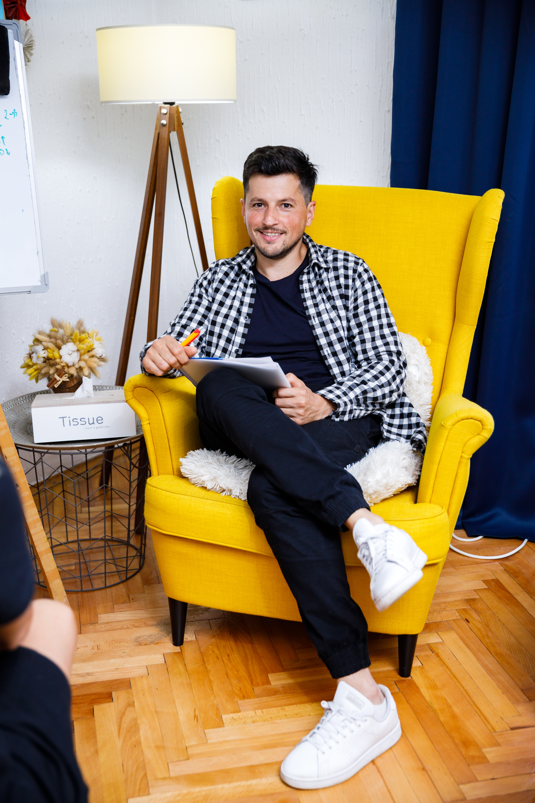
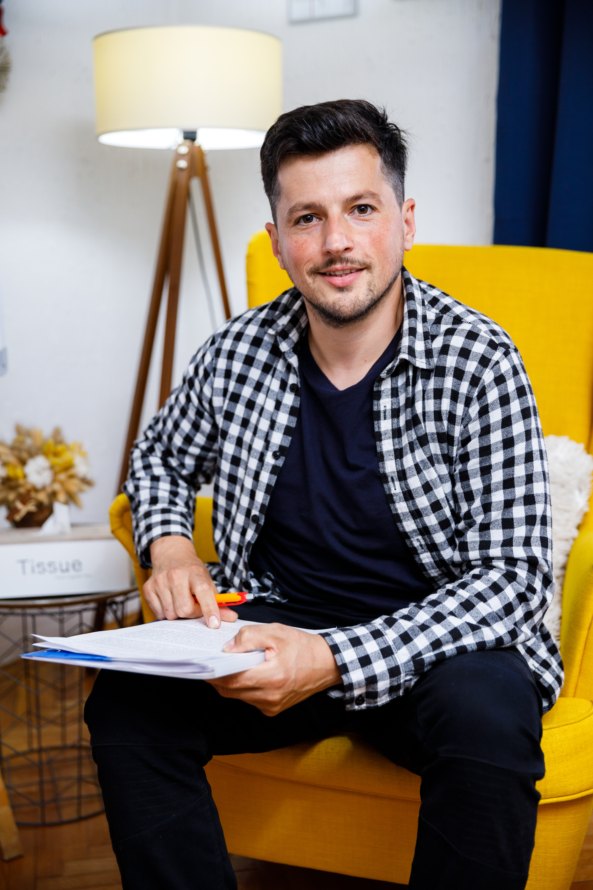
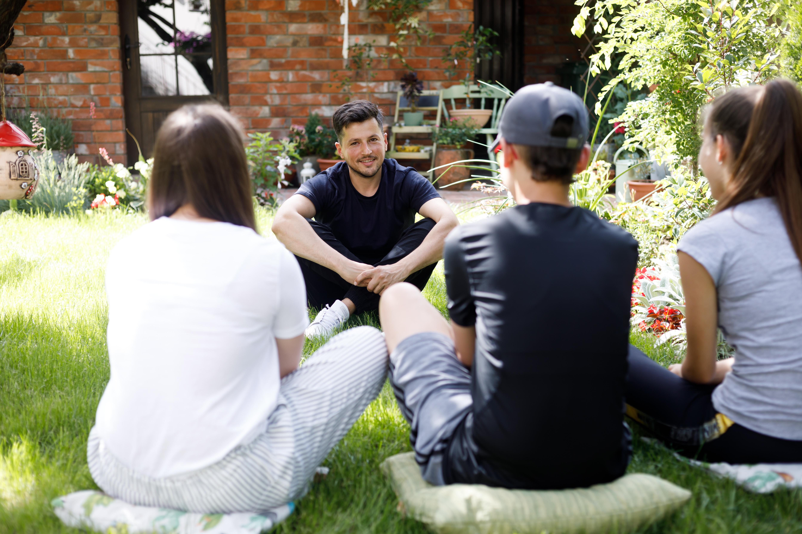

Individualna psihoterapija
Prostor posvećen tebi i onome što trenutno želiš da razumeš, promeniš ili lakše nosiš.
Individualni rad je moguć uživo u Aleksincu ili onlajn.
Psihoterapija ti pruža prostor da bolje razumeš sebe, svoje odnose i ono što ti se ponavlja, opterećuje te ili te sprečava da živiš onako kako želiš.
Individualna, partnerska i porodična psihoterapija, uživo u Aleksincu i onlajn.

Možda prolaziš kroz težak period. Možda se isti problemi ponavljaju u odnosima. Možda osećaš nezadovoljstvo, napetost ili umor, a ne znaš sasvim odakle dolaze.
A možda samo želiš bolje da razumeš sebe i način na koji gradiš odnose sa drugima.
Na terapiju ne moraš da dođeš sa gotovim odgovorima. Dovoljno je da postoji nešto o čemu želiš da razgovaramo.
Saznaj više o psihoterapiji →
Prostor posvećen tebi i onome što trenutno želiš da razumeš, promeniš ili lakše nosiš.
Individualni rad je moguć uživo u Aleksincu ili onlajn.
Kada se isti konflikti ponavljaju, komunikacija postane teška ili se među partnerima stvori udaljenost, terapija može da pomogne da bolje razumete šta se događa između vas i pronađete drugačiji način da razgovarate i budete u odnosu.
Porodica je sistem u kom promena jednog odnosa utiče i na druge. Zajednički rad može pomoći da jasnije sagledate obrasce komunikacije, potrebe i teškoće koje se ponavljaju unutar porodice.

Radionice su namenjene ljudima koji žele da kroz razgovor, iskustvene vežbe i rad sa drugima istražuju određenu temu.
Možeš da se prijaviš za neku od najavljenih radionica, a moguće je organizovati i radionicu za već formiranu grupu, organizaciju ili instituciju.
Pogledaj aktuelne radioniceU radu koristim transakcionu analizu, psihoterapijski pristup koji nam pomaže da razumemo kako su iskustva i odluke koje smo nekada napravili povezani sa načinom na koji danas mislimo, osećamo, reagujemo i gradimo odnose.
Važan deo terapije je prepoznavanje obrazaca koji se ponavljaju. Kada ih bolje razumemo, otvara se mogućnost da umesto automatskih reakcija napravimo drugačije izbore.
Terapija za mene nije mesto na kom ti neko govori kako treba da živiš. To je zajednički proces u kom istražujemo šta ti je važno, šta ti više ne služi i šta želiš da promeniš.Više o mom pristupu →
Po struci sam psiholog, a psihoterapijskim radom bavim se već 11 godina.
Pored privatne prakse, radim i u školi, što mi je tokom godina omogućilo da upoznam ljude različitih uzrasta, porodičnih okolnosti i životnih iskustava.
U radu mi je važno da terapija ne bude hladan i formalan proces. Želim da postoji dovoljno prostora za ozbiljne teme, ali i za spontanost, humor i sve ono što prirodno čini jedan ljudski razgovor.
Priroda je važan deo mog života, pa se deo radionica održava i u mom dvorištu u Aleksincu, u mirnom okruženju koje pruža drugačiji prostor za susret i zajednički rad.
„Utisak klijenta biće dodat naknadno.“
„Utisak klijenta biće dodat naknadno.“
„Utisak klijenta biće dodat naknadno.“
Cena se ne određuje isto za svakoga.
Važno mi je da finansijske okolnosti, kada je to moguće, ne budu prepreka za psihoterapiju. Zato cenu dogovaramo individualno, uzimajući u obzir vrstu rada i tvoje trenutne mogućnosti.
O tome možemo otvoreno da razgovaramo pre nego što odlučiš da započneš terapiju.
Pitaj za termin i cenuNe moraš odmah da doneseš odluku o terapiji.
Možeš da mi pošalješ poruku i ukratko napišeš zbog čega se javljaš ili šta trenutno tražiš. Dogovorićemo se oko termina i načina rada, a sva dodatna pitanja možeš da postaviš pre prvog susreta.
Ako ti je lakše, možeš i da pozoveš.
Ne moraš da znaš kako će izgledati ceo proces niti koliko će trajati. Prvi korak može da bude jednostavan: javi se i vidi da li ti ovakav način rada odgovara.
Uživo u Aleksincu · Onlajn
Pošalji poruku